LIVEとFES
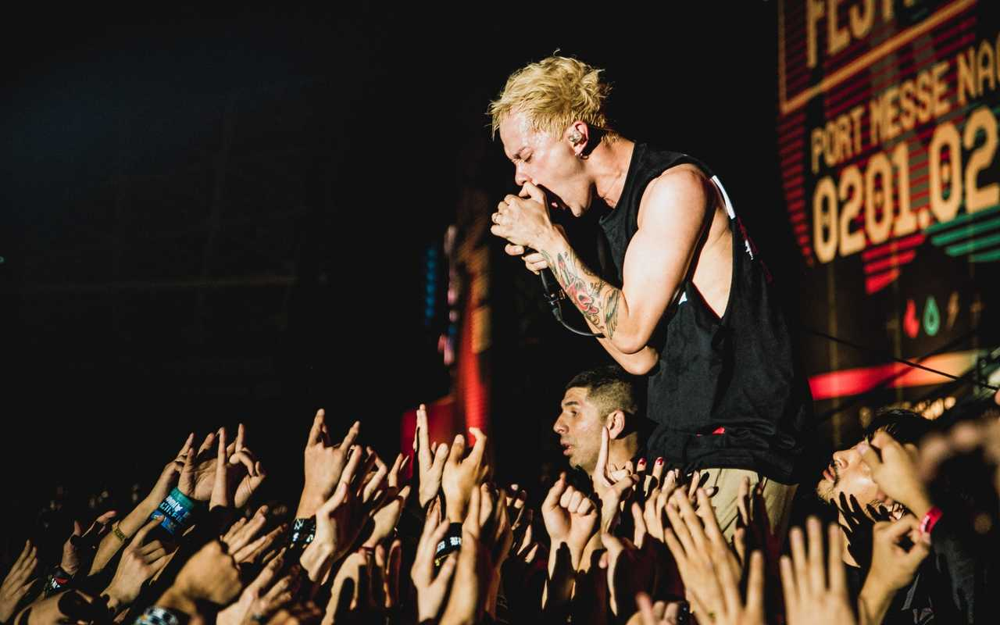 引用元:coldrain.jp私の趣味は音楽LIVE,音楽FESに参加することです。音楽LIVEと音楽FESについて説明していきます。
主にロックやラウド系といわれるアーティストが好みです。
音楽LIVE
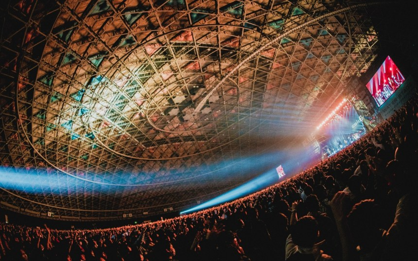 引用元:coldrain.jp音楽LIVEは原則1組のアーティストが開催することが多いです。
そのため、そのアーティストのファンのみが参戦し、好きなアーティストの曲や演奏、MCなどを楽しみに行きます。そのアーティストにどっぷりはまれる時間を楽しむのがライブの醍醐味です。主にライブハウスやコンサートホールなどの屋内施設で行われます。
開演・終演時間もライブに出演するアーティストによって様々です。
大型イベントの場合、開演時間は早く終演時間は遅いが、1組のアーティストのみが行う場合、開演・終演の時間は平日・土日祝で異なる場合が多いです。
基本的に平日は19時からのスタートが多く、終演は開演から約2時間半程度です。
19時スタートだと、平日仕事終わりや学校終わりに行けるので、気軽にライブを楽しめる魅力の一つです。
音楽FES
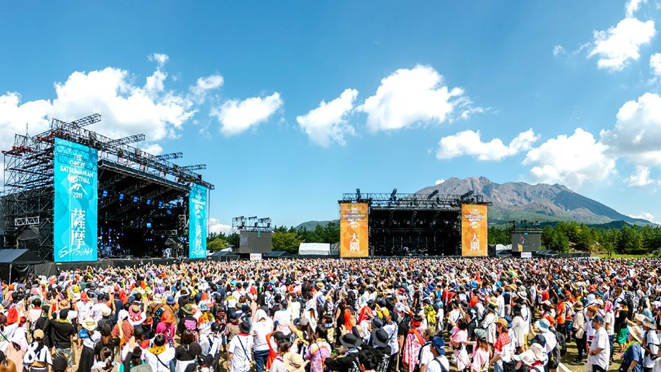 引用元:THE GREAT SATSUMANIAN HESTIVAL 2020音楽FESのほとんどが屋外で開催されます。野外FESとも言われます。FESの１番の特徴は、出演アーティストが多いことです。
たくさんのアーティスが約30～45分のローテーションで演奏を行います。また音楽だけではなく、屋台が充実しているのもフェスの特徴です。美味しいものを食べながら、好きなアーティストのステージを楽しむこともできます。
そしてFESは出演アーティストが多いので、午前の部と午後の部の2つのステージに分かれるかとが多いです。
そんな時は、見たいアーティストの出演時間をチェックし、それ以外は屋台で食べ物や飲み物を堪能することもでき、長時間に渡って楽しめるのもFESの醍醐味です。
近年は音楽ジャンルの多様化している為、ロックやポップ、テクノ、アイドルなども参加しています。
だからこそ、様々なジャンルのファンが集結し、思い思いに楽しめるのがFESの最大のメリットです。
LIVE・FESの楽しみ方
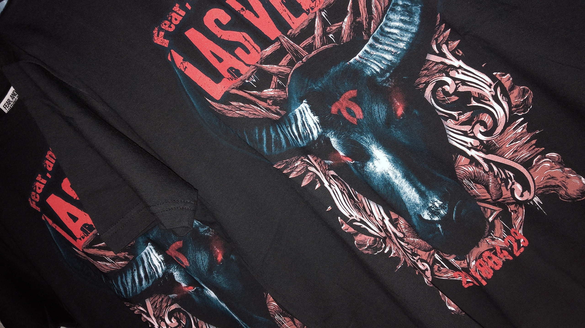このページでは、LIVE・FESでの楽しみ方について説明します。
上の写真は私が買った、Fear and loathing in LasvegasというアーティストのTシャツです。
ヴァッファローをモチーフにしたカッコいいTシャツで、とてもお気に入りです🐸
物販・グッズ
引用元：THE GREAT SATSUMANIAN FESTIVAL
LIVE・FESの楽しみ方の一つにアーティストのグッズ購入があります。
上の写真は、昨年鹿児島の桜島多目的広場と桜島溶岩グラウンドで開催されたTHE GREAT SATSUMANIAN HESTIVAL2019のグッズ写真です。
桜島をモチーフにしたTシャツやタオル、ラバーバンドなど販売されていました。
こういった、物販グッズを買うのも音楽LIVE・FESの楽しみ方の醍醐味です。この日は、約50組のアーティストが集結し、様々なFESグッズが勢揃いしておりテンションが上がっていたのを覚えています(笑)
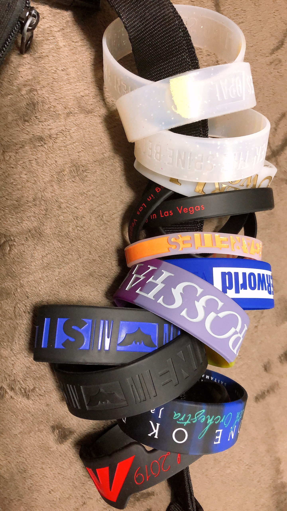これは私が持っているラバーバンドです🐸
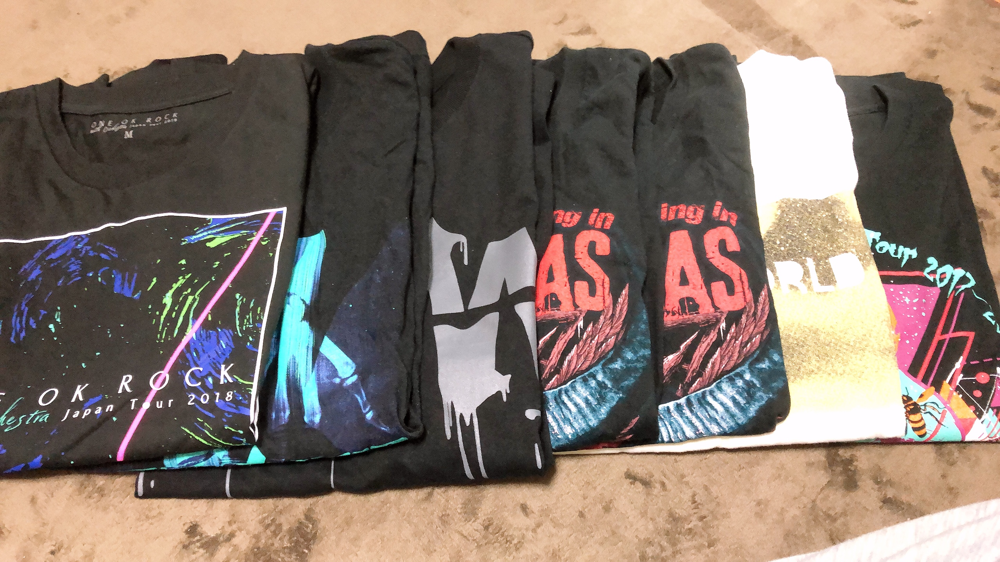これは私が持っているライブTシャツです🐸
フェス飯
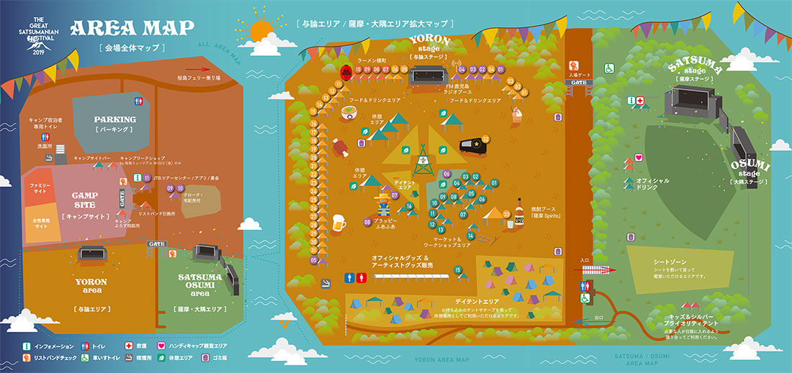 引用元：THE GREAT SATSUMANIAN FESTIVAL2019上の写真はTHE GREAT SATSUMANIAN HESTIVAL2019のエリアマップです。
マップに書いてあるように、フード&ドリンクエリアと焼酎ブースというエリアがあります。FESではアーティストの音楽を聞く以外に出店で美味しいFES飯を食べたり、ドリンクやアルコールを飲むのもFESの楽しみ方の一つであり、醍醐味です。
このFESは鹿児島開催ということもあり様々な焼酎が販売されていたのも印象的でした。
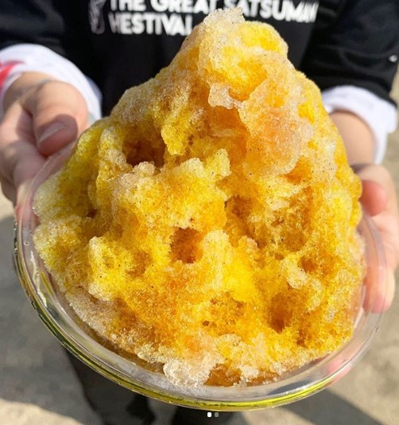かき氷が販売されていました🐸
FESに行った際は、是非何かしらFES飯を食べてください🐸
おすすめアーティスト紹介
このページでは、私のおすすめのアーティストを紹介します。
coldrain
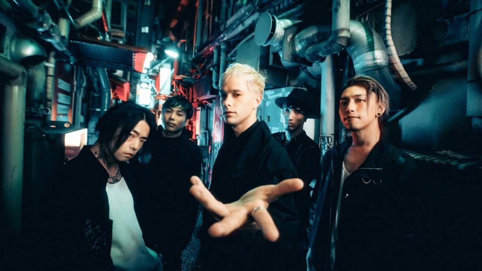 引用元：coldrain.jpcoldrainは、2007年に愛知県名古屋市で結成されたロックバンドです。
パンク、ハードコア、メタル、エモ等の要素を取り入れた音楽性を特徴とするラウドロックバンドです。
ボーカル・masatoのとてつもない歌唱力がとても魅力的です。
公演中の動画、写真撮影が許可されており、国内では珍しいバンドです。
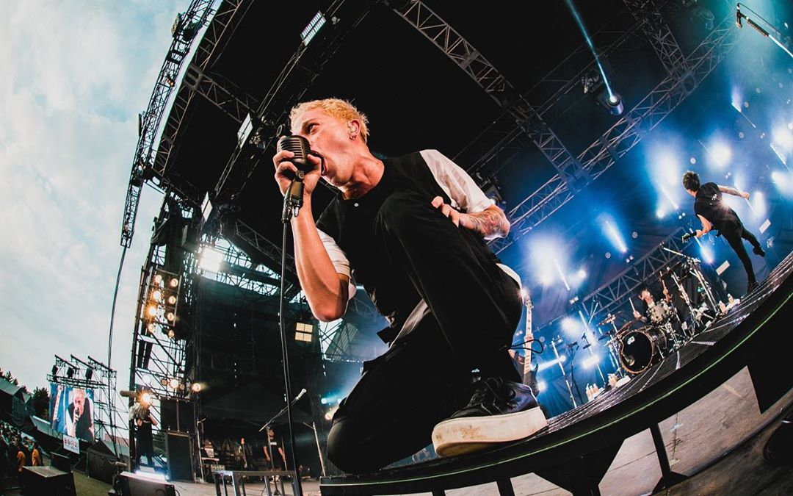 引用元：masato_coldrainTHE GREAT SATSUMANIAN HESTIVAL 2019での一コマ。
オススメの1曲
SiM
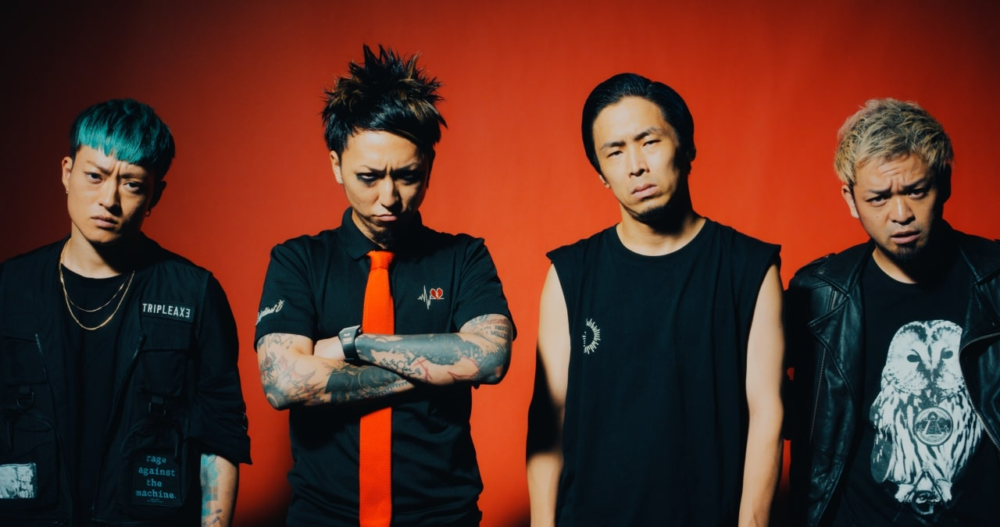 引用元:SiM.jpSiMは、2004年に神奈川県の湘南で結成された日本のラウドロックバンドです。旧称はSilence iz Mineです。
ハードコア、スクリーム、パンク、メタルコアなどにレゲエを取り入れたハイテンポなサウンドが特徴的です。
ボーカル・Mahの多彩な歌声が魅力です。クリーンと呼ばれる一般的な声とスクリーム、シャウトと呼ばれる歌唱法を交互に使い分けているところにも注目です。
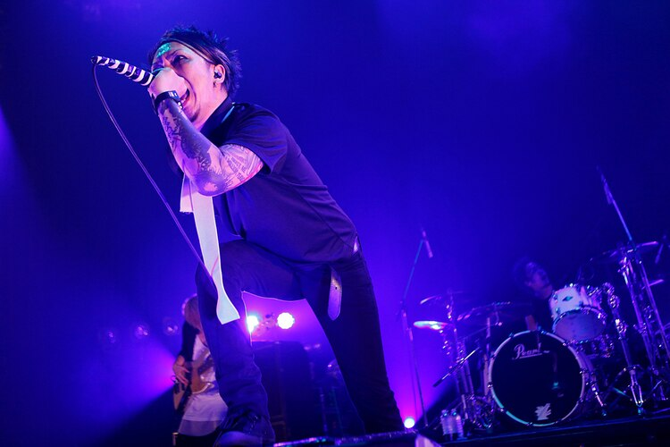 引用元:SiMツアーAre You Comming? Tourでの一コマ。
オススメの1曲
Fear and Loathing in Las Vegas
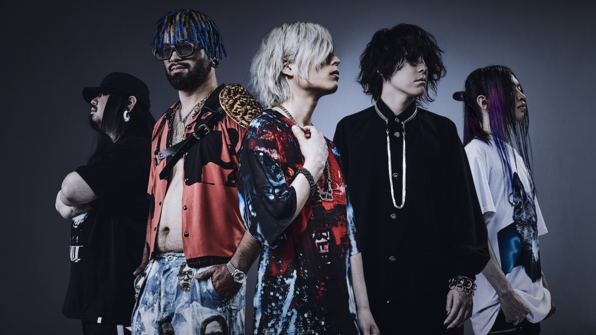 引用元:lasvegas-jp.comFear and Loathing in Las Vegasは、2008年に兵庫県の神戸市で結成された6人組のバンドです。
ポストハードコアをベースに、オートチューンを用いたボーカルとシンセサイザーを交え、トランス要素を取り入れたスタイルが特徴的です。
メインボーカルが2人居て、スクリームボーカルとクリーンボーカルが交互に歌うのも特徴的です。
バンド名の公式略称は「FaLiLV」「ラスベガス」。愛称は「ベガス」。最近では、バンド名が長過ぎて、「なんちゃらラスベガス」と略されることも多くなってきました。
一つの曲の中に何度も曲調が変わるのがとても斬新で衝撃を受けました。私の一番好きなアーティストです。是非、聴いてください。
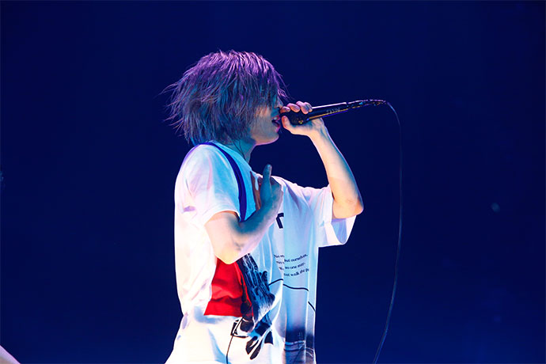引用元：gekirock.com
「New Sunrise」Release Tour 2017-18 GRAND FINAL SPECIAL ONE MAN SHOWでの一コマ。
オススメの1曲
UVERworld
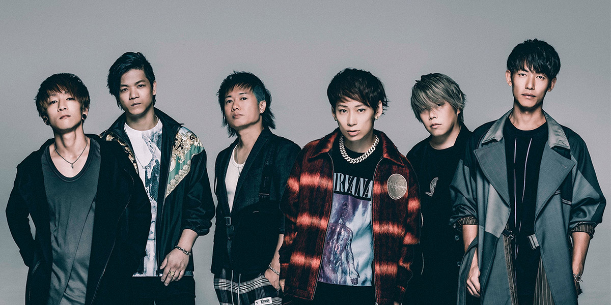 引用元:uverworld.jpUVERworldは、2000年に滋賀県の草津市で結成された6人組ロックバンドです。
愛称は「UVER」で、UVERworldファンは、「Crew 」(クルー)と呼ばれています。
名前の由来は、「〜world」と、「超える」の意味を持つドイツ語「über」と英語「over」とを混ぜ合わせた造語で、バンド名の意味は「自分達の世界をも越える」らしいです。
ラップやヒューマンビートボックス、エフェクトを用いたボーカルなど、多種多様な要素を含んだミクスチャーサウンドが特徴的です。
ジャンルとしてはロック、ハードロック、ヒップホップ、R＆B、エレクトロニカなどを内包している。
ボーカル・TAKUYA∞の熱いMCはとても心を揺さぶられるものがあります。J- ROCK好きにはオススメのアーティストです。是非、一度LIVEに足を運んでください。
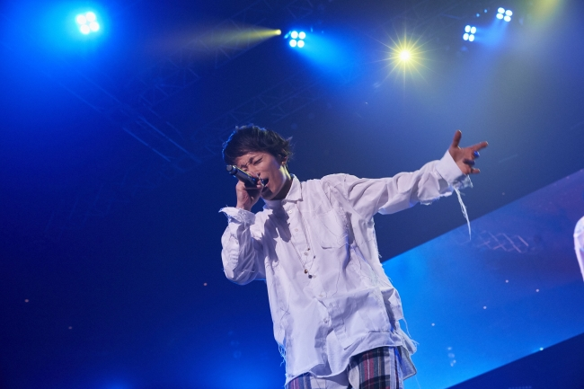 引用元：PRTIMESUVERworld ARENA TOUR 2018での一コマ。
オススメの1曲